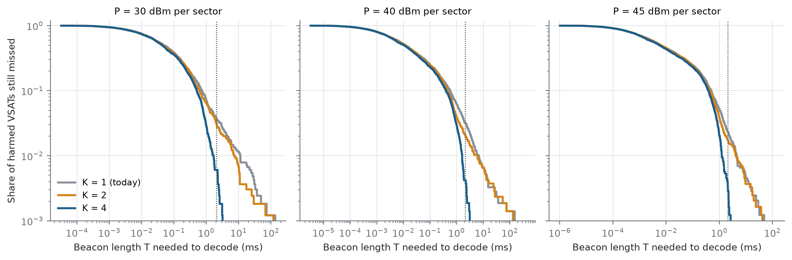
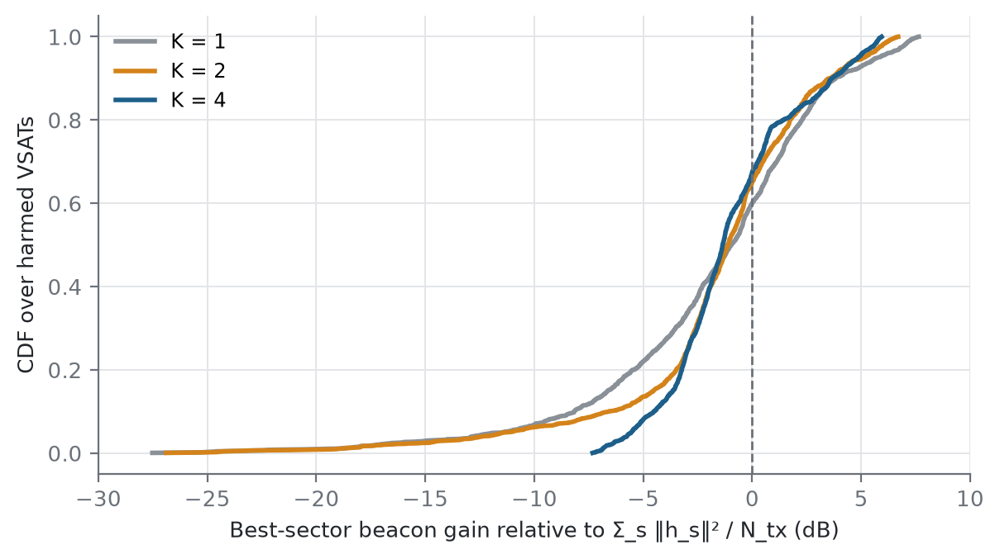
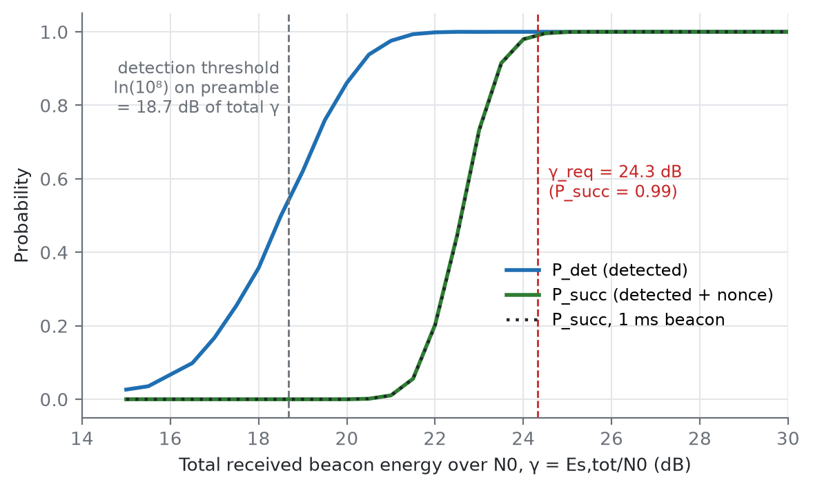
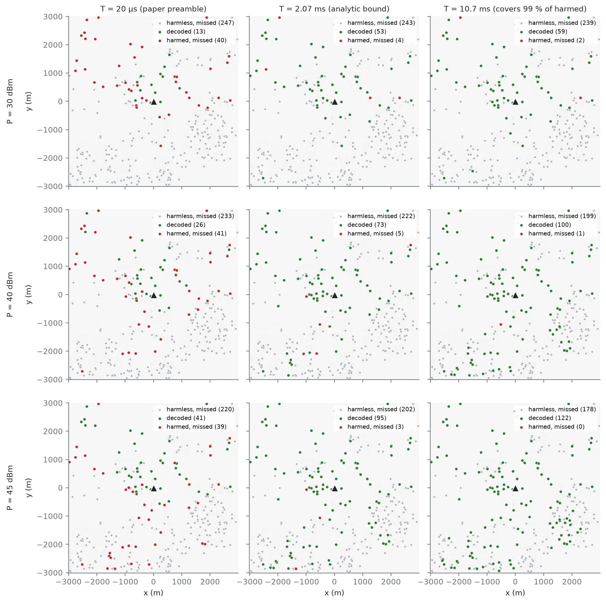
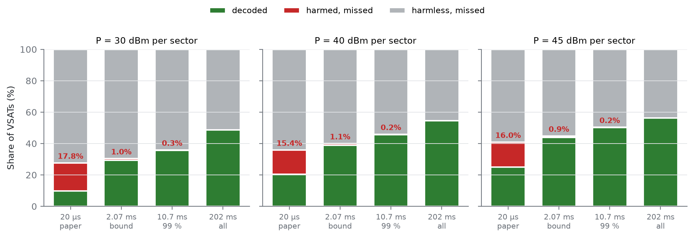
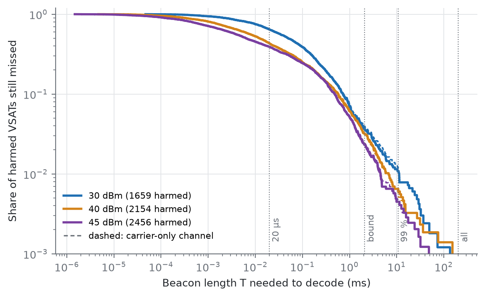
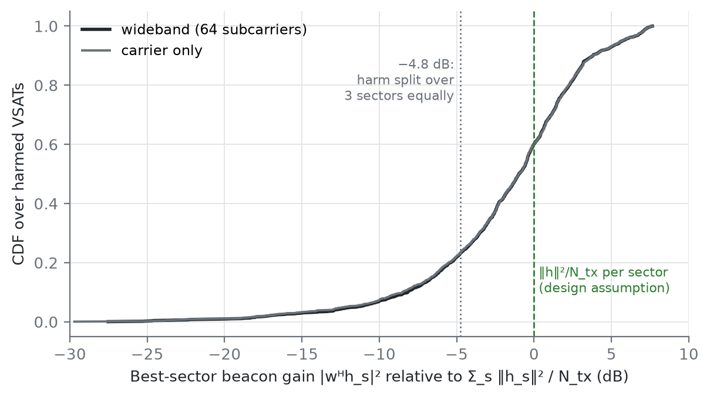

The thesis authenticates the TN–NTN nulling handshake. The gNB broadcasts a beacon carrying a random nonce, each VSAT that hears it replies with a ZKP-authenticated response, and the gNB nulls only toward authenticated VSATs. A VSAT that misses the beacon never replies and is never protected. STEP 1 asks how long that beacon must be so that every VSAT the gNB could harm decodes it.
The 15 Oct results traced the long tail to dips in the quasi-omni pattern (section 4.5). The fix tested here: send the beacon in K equal segments, each with the same Zadoff-Chu pattern shifted by half a DFT bin, so the dips of one pattern fall where the others are strong. Total energy and airtime are unchanged. Each segment carries its own preamble, so the receiver pays a small non-coherent combining cost, which the link-level simulation measures.

| Patterns K | γ_req | Bound | 99 % of harmed 30 / 40 / 45 dBm | All harmed 30 / 40 / 45 dBm | Red at bound (all VSATs) |
|---|---|---|---|---|---|
| 1 (15 Oct design) | 24.32 dB | 2.07 ms | 10.7 / 5.8 / 4.4 ms | 136 / 202 / 64 ms | 0.9–1.1 % |
| 2 (azimuth shift only) | 24.35 dB | 2.08 ms | 6.9 / 4.5 / 4.0 ms | 118 / 360 / 114 ms | 0.7–0.8 % |
| 4 (azimuth × elevation) | 24.45 dB | 2.13 ms | 1.5 / 1.6 / 1.2 ms | 3.2 / 3.6 / 3.4 ms | 0.10–0.15 % |

In the baseline paper (Jia et al.) the VSAT transmits and the gNB detects it with 64 antennas. Here the direction is reversed: the gNB transmits a beacon and each single-antenna VSAT must detect it and decode the 128-bit nonce. Two facts shape the problem.
Every VSAT is coloured by comparing two quantities.
green = decoded the nonce from at least one sector; red = harmed and decoded nothing (the failure we want to remove); grey = missed but harmless. "Decoded" means detected and nonce correct, not just detected. "Harmed" is a deliberately conservative worst case: every sector's full beam pointed at the VSAT at once, so the result does not depend on which TN-UE happens to be served.
Setting the two conditions against each other gives a closed-form rule. If the beacon pattern gave exactly ‖h_s‖²/N_tx, red dots vanish once
The factor 3 covers harm summed over three sectors when the VSAT can decode only one. The paper's 20 µs preamble is about 100 times shorter.
The work splits into a link-level layer, run once, and a system layer evaluated per VSAT over ray-traced channels. All code lives in beacon/ (shared modules) and experiments/ (scripts). Every run writes params.json with its git hash to results/.
| Piece | What it does | Key choices |
|---|---|---|
Layer Abeacon/phy.pybeacon_curves.py | Monte Carlo of the beacon over AWGN with an unknown phase: P_det, nonce BLER and P_succ vs total received energy γ = Es,tot/N0. Gives γ_req. | 25 % known preamble + 128-bit nonce, 5G LDPC (512,128), QPSK, repeated to fill T. Energy detector at P_FA = 10⁻⁸ per timing hypothesis. Channel phase estimated from the preamble. 5,000 trials per point. |
Precoderbeacon/precoder.py | Quasi-omni beacon weights for the 4×16 array. | 2D Zadoff-Chu (Kronecker of length-4 and length-16 ZC). Constant modulus, so all 64 PAs run at full power, and flat on the DFT beam grid. |
Channelsbeacon_channels.py | Sionna RT on the Boulder scene: 1 gNB, 3 sectors × 4×16 URA, VSAT dish pointed at the satellite. | Paper deployment (80 % rooftop, sat. elevation 25–90°, 500 km). 20 drops × 300 VSATs, max depth 3. Channels at the carrier and on 64 subcarriers across 100 MHz. |
Layer Bbeacon/linkbudget.pybeacon_maps.py | Per VSAT, sector, power and length: beacon γ, worst-case INR, colour. Searches the beacon lengths that clear 99 % and 100 % of harmed VSATs. | P ∈ {30, 40, 45} dBm per sector. Gains averaged over the 64 subcarriers (wideband). Sectors send their beacons on orthogonal time slots. |
| Parameter | Value | Source |
|---|---|---|
| Carrier, bandwidth | 10 GHz, 100 MHz | Paper, Table I |
| gNB array per sector | 4 × 16 = 64 | Paper |
| VSAT noise figure | 2 dB | Table I (notebook uses 3 dB; both recorded) |
| Harm threshold INR_th | −6 dB | Paper |
| False-alarm target | 10⁻⁸ / hypothesis | Paper; one hypothesis per sample offset (≈ 1 false alarm/s) |
| Nonce | 128 bit | Design choice |
| Success target | P_succ ≥ 0.99 | Design choice |
Before any map was read, the checks required by the project were run. They all pass.
| Check | Result | |
|---|---|---|
| Single LoS link, dish main lobe, vs hand budget (FSPL + element + dish gain) | −60.61 vs −60.60 dB | PASS |
| Single LoS link, dish 30° off boresight (sidelobe, as when tracking a satellite) | −104.55 vs −104.54 dB | PASS |
| Worst-case INR at 30 dBm, main lobe / sidelobe, vs hand budget | Δ = −0.01 dB both | PASS |
| Measured false-alarm rate vs target (2 M noise-only trials; 10⁻⁸ itself is too rare to measure, so the same threshold formula is checked at larger targets) | 0.0099 / 0.00098 / 0.000106 at 10⁻² / 10⁻³ / 10⁻⁴ | PASS |
| Green fraction does not drop as power rises (every T) | monotone | PASS |
| Unit tests (link budget, classification, PHY edge cases, I/O) | 34 / 34 | PASS |
| Red at the analytic bound (tests the ‖h‖²/N_tx assumption) | ≈ 1 % of VSATs | REPORTED |

The nonce costs about 3 dB more than detection at the 99 % point. In energy-per-bit terms, γ_req ≈ 270 spread over 128 bits is about 2.1 per information bit (3.2 dB Eb/N0, preamble included). That is a sensible operating point for a rate-1/4 LDPC code. Because the success curve depends only on total energy and not on T, one number, γ_req, carries the whole link layer into the maps.

Two patterns stand out. Going down a column (more power), green grows but red does not shrink, because new VSATs enter the harmed set as fast as old ones become audible. Going right along a row (longer beacon), red turns green. At 45 dBm and 10.7 ms the drop has no red at all. The grey majority are mostly VSATs with no ray-traced path to the gNB (39 % of placements) or with weak sidelobe coupling.

| Beacon length T | 30 dBm | 40 dBm | 45 dBm |
|---|---|---|---|
| Harmed (worst case), any T | 27.7 % | 35.9 % | 40.9 % |
| 20 µs (paper preamble) | 17.8 % | 15.4 % | 16.0 % |
| 2.07 ms (analytic bound) | 1.0 % | 1.1 % | 0.9 % |
| 10.7 ms (99 % of harmed) | 0.3 % | 0.2 % | 0.2 % |
| 202 ms (all harmed) | 0 | 0 | 0 |
The harmed share grows with power, from 28 % to 41 %. The missed-but-harmed share at 20 µs stays at 15–18 % regardless. This is the expected result: power moves the boundary of the at-risk region, length decides whether the beacon covers it.

The median harmed VSAT needs only 6–50 µs, so the bulk is easy. The trouble is the tail. Between the analytic bound (2 ms) and full coverage (≈ 200 ms) the missed share falls only from about 3 % to zero, and the last 1 % alone costs a factor of 20 in length. The wideband and carrier-only curves overlap. Averaging over 100 MHz removes frequency fading but does not change the tail, so fading is not its cause.

The required length of each harmed VSAT, relative to the bound, factors into two terms:
The first term is the interference margin. Most harmed VSATs are far above threshold (median INR +7 dB at 30 dBm, +16 dB at 45 dBm), and every dB of excess harm is a dB of excess beacon SNR, so they decode early. The second term is the pattern loss. A VSAT exceeds the bound only when it sits near the harm threshold and in a dip of the ZC quasi-omni pattern. The ZC precoder is flat on the 64 DFT beam directions but not between them, and with sparse multipath (a few strong rays) the VSAT sees that ripple directly. The red that remains at the bound is therefore a property of the precoder, and the precoder is something we can change.
Four half-bin-shifted ZC patterns cycled over the beacon: full coverage at 3.6 ms instead of 202 ms, for 0.13 dB extra energy. See the update at the top. Still open: segments with unequal gains in the link-level model, and more drops to confirm the 1.8× ceiling.
Replace the worst-case beam with the actual nulling-BF beams toward served TN-UEs (from Lambda_CDF_det). Report red under the CDF of real interference, not only the bound.
Choose the uplink model (reciprocal ray-traced channel, VSAT transmitting through its sidelobe toward the gNB, 64-antenna receive gain). At the same energy per bit as the nonce, a 400 B proof needs about 25× the nonce energy, 5 KB about 320× and 1 MB about 65,000× (+48 dB). The large proof is the open question.
Combine beacon airtime (this step) with response airtime (STEP 2) into a TN and VSAT-uplink capacity loss per proof system, and set it against verification compute.